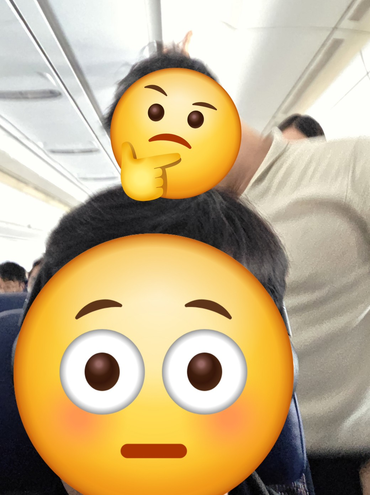

비행기 탔더니 보았던 신기한 경험
비행기 이륙예정시간 2분 전에 탑승한 어떤 사람
그 사람이 착석한 후 바로 비행기는 게이트를 떠나 움직입니다.
그렇게 비행기가 움직이는데 일어나 짐을 꺼내는 그 사람
그리고 그 사람을 말리며 착석을 요청하지만 할 거 다 하는 그 사람
이런 사람도 있구나 신기했네요
왜 신기했냐면 다음의 이유입니다.
저런 행동의 원천 중 하나는 무지식이라 생각했습니다. 즉, 모르니까 그럴 수 있다는거죠.
비행기를 처음 타는 것이면 늦을 수도 있고 저런 행동도 할 수 있죠.
하지만 흥미롭게도 저 사람이 자리에 앉자 승무원이 가서 인사하고 오늘 비행 일정등을 설명하더군요.
저도 같은 인사를 받았는데 그게 제 경험상 어느 티어의 회원 등급이 되자 일어난 일입니다.
즉, 저 사람은 비행기를 처음 타는게 아니었다는 것이지요.
서비스업을 하시는 아버지께서 종종 하시는 말씀이 있습니다.
"아는 사람이 더 한다"
무언가 룰을 알고 있는 사람이 그걸 지켜야하는데 반대로 더 악용한다는 것이지요.
아마 지각 역시 자기 버리고 가면 짐을 빼야하는 수고로움이 있으니 이를 악용하는 것 아닌가 싶네요.
택싱 중 자리에 일어나도 승무원이 제재를 말로만 하니까 무시하며 이를 악욕하는 것 아닌가 싶네요.
앞으로 살아가면서 저 역시 무언가 많이 경험하고 배우고 알게 될 것입니다.
그럴수록 아버지 말씀의 예시가 아닌 반례가 되도록 노력해야겠다는 것을 깨달은
그래서 신기한 경험이었습니다.